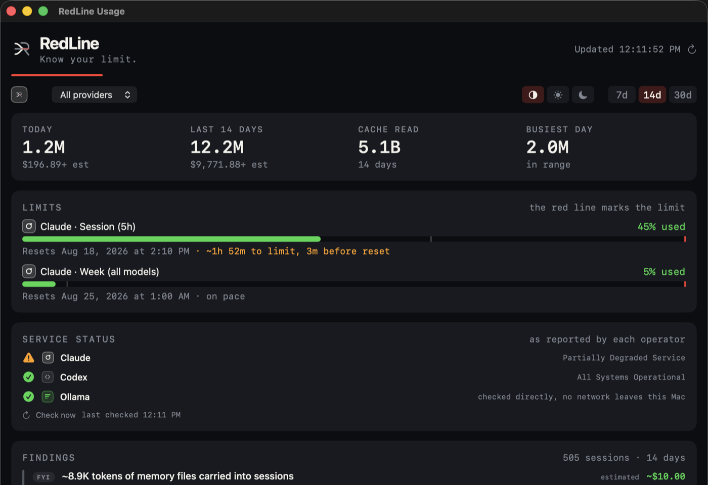
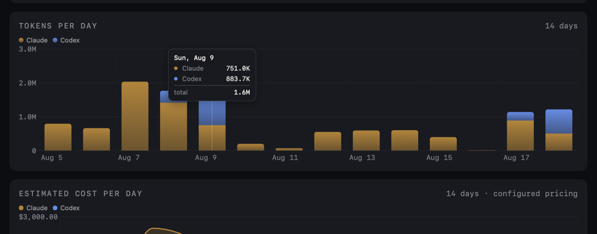
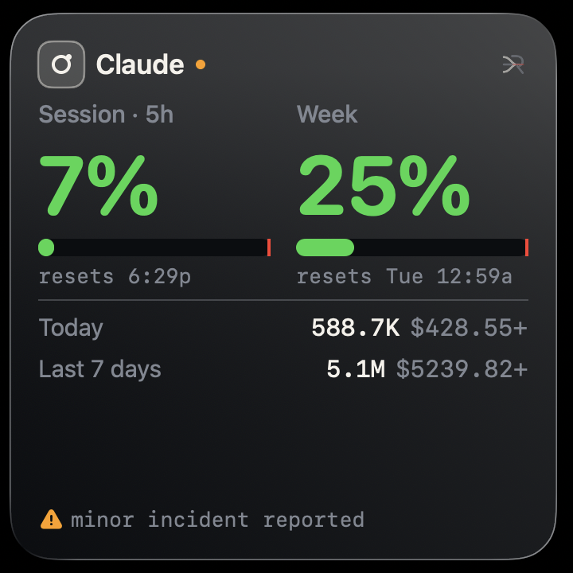
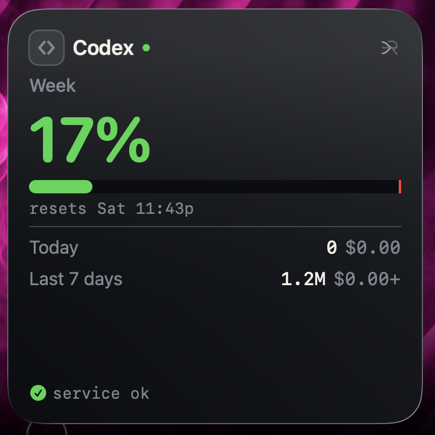
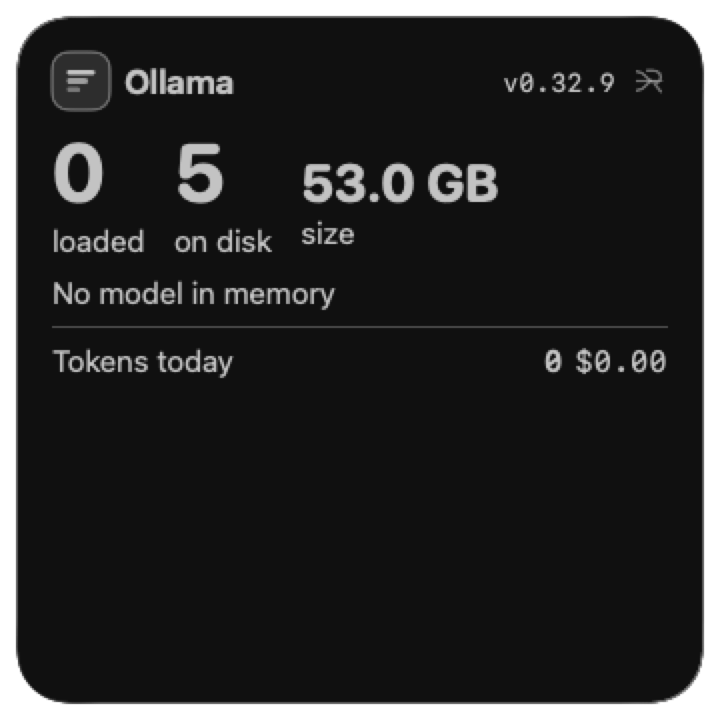
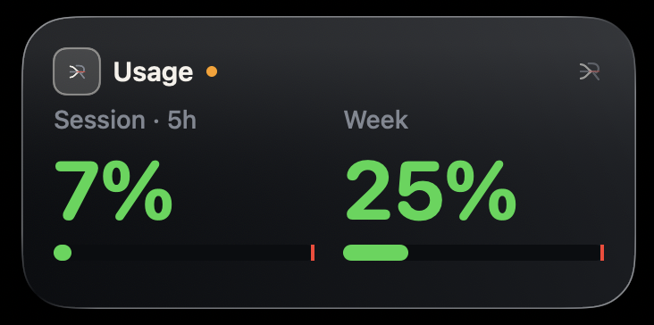
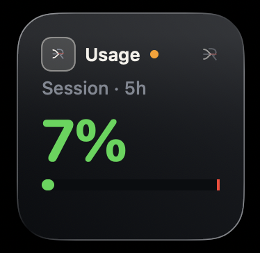
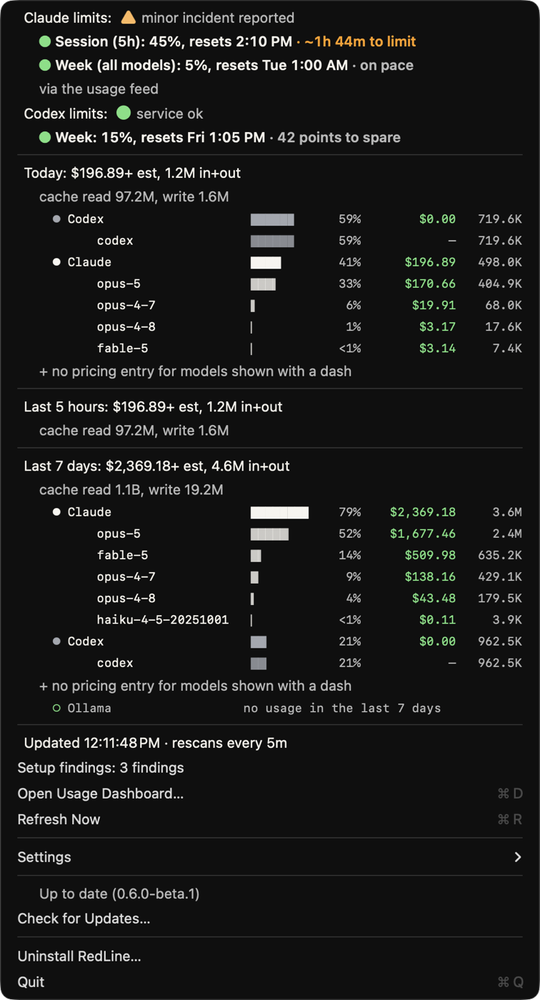

Claude, Codex, and Ollama usage in a quiet macOS menu-bar app. Know what remains before your flow gets interrupted, and which of your agents is sitting there waiting on you.
macOS 14 or later · menu bar and desktop widget · MIT
Usage
Menu bar: nearest limit, your style
In place
A menu bar readout you can glance at, a dashboard when you want the detail, and widgets on the desktop for whichever tracks you care about.








The fleet
Run sessions across a dozen project directories and one of them is always sitting on a prompt you have not noticed. Claude Code writes a record for every session running on this Mac, so RedLine can list them, and say plainly which one is waiting on you.
Every session on this Mac, with the folder it is working in and how long it has been in its current state. Waiting sorts above busy, busy above idle, and inside each the one that has been there longest floats to the top. The session stuck for an hour is the first line you read.
An amber dot ahead of the readout the moment a session blocks on input, counted once there is more than one. Busy never earns a badge, because a badge that is always lit says nothing. It clears itself when you answer.
Clicking a session goes to the tab it is actually running in, matched on the terminal device the kernel reports. Split panes too. Where a terminal cannot say where a session lives, it brings that app forward instead, and the menu says which of the two it is about to do.
Read only, always. RedLine never writes into ~/.claude,
never opens the key files beside the records, and never touches the sockets they name.
Cloud sessions and other machines are out of scope; there is no public API for them.
Sources
Each provider is independent and optional, switched on and off from the menu. When several are active, the menu bar shows whichever is nearest its limit, because that is the one that will interrupt you first. Prefer to watch just one? Pick it under Menu bar shows and the dropdown still reports them all.
Token and cost totals come from transcripts already on disk, with no sign-in. Remaining capacity comes from the usage feed: the same windows Claude Code hands its statusline, one click to set up, no token and no network. Between sessions the figures grey out with their age; an opt-in browser sign-in or a read-only borrow of the CLI's token keeps them live instead.
Codex records both its limit windows and its per-turn token counts locally, so RedLine reads them with no sign-in and no network call at all.
Ollama keeps no usage history, so a transparent shim records each call as you make it. Local inference has no cost, so it is reported in tokens, never dollars.
Setup, once
ollama run is countedSet Up Ollama Tracking in the dropdown installs a
transparent shim at ~/.local/bin/ollama, which has to come before the
real binary on your PATH. If it does not already, add
export PATH="$HOME/.local/bin:$PATH" to your shell profile once.
Every other subcommand passes through to the real binary untouched.
Two shapes of ollama run are answered over the local API so their
token counts land in RedLine: a prompt piped in, and a prompt as a single
argument. No agent configuration, no habit change.
# you, or your coding agent, exactly as before
ollama run qwen3-coder:30b <<'PROMPT'
Summarize this build log.
PROMPT
Interactive chat, any run carrying flags, and programs
that call Ollama's HTTP API directly never reach the shim, so those stay
uncounted. If the API call fails the prompt is replayed through the real binary,
so the worst case is an uncounted call, never a broken one.
Private by default
Everything is computed locally from files your tools already write. There is no analytics, no telemetry, and no crash reporting. The one call RedLine makes on its own is a daily check for a newer release, which you can switch off. SECURITY.md lists every path read and written.
Your Claude and Codex transcripts are parsed for token counts and nothing else. Their content is never copied, stored, or sent anywhere. Prompts never reach a log.
One is on by default: the daily release check, against GitHub's API. The rest are yours to switch on. Claude rate limits and sign-in reach Anthropic. Service health reads Anthropic's and OpenAI's public status feeds. Codex and Ollama usage never leave the disk, and endpoint overrides must be HTTPS.
Sign-in uses OAuth with PKCE and a loopback listener bound to localhost. Borrowing the Claude CLI's own token is off by default, needs your explicit consent, and is read-only: RedLine never refreshes it, so it cannot sign the CLI out.
Beyond the number
What you want to know is whether this window stops you before it rolls over, where the money is going, and what your setup is quietly costing. RedLine answers all three from files already on your disk.
Every window that has run long enough carries a rate, so the menu and the rails say how long is left at the pace you are actually going. Where readings have been recorded inside the same window it is measured by differencing them; otherwise it is that window's own average, and the tooltip says which. The rails also mark where the clock has reached, so spending faster than the window refills is something you see rather than something you calculate.
RedLine speaks up when a window crosses your threshold, when it is about to run out before it resets, and when it rolls over and capacity comes back. Once per window, and never from a reading it cannot vouch for. macOS is asked for permission at the first one rather than at launch, so the prompt lands when there is finally something to say.
MCP servers configured and never called, skills and commands defined and never invoked, files read three or more times inside one session, memory files large enough to notice. Each says whether its numbers were counted or estimated, and a finding with nothing honest to put on it carries no dollar figure at all.
Claude Code prunes its own transcripts, so a chart built from what is still there gets shallower every week. RedLine keeps its own copy in a SQLite file, on the library macOS already ships, and reads each transcript once by remembering the byte it stopped at. A day already recorded is never written back down, so a pruned transcript cannot erase it. Any SQLite client can open the file.
The current windows are published as JSON in the shape other local monitors already parse, so a status line or a tmux strip can take this reading instead of every tool racing for the same source. It reads someone else's too, and only while it is fresh.
redline status --json answers with the windows, their pace and the
totals, every figure labelled with where it came from. Exit codes are part of the
contract, so a shell prompt or a CI step never has to parse prose.
How it reports
RedLine exists because an earlier version displayed 0 $0.00 for a day. The figure was accurate and still misleading: the sign-in had lapsed. Three rules came out of that.
When usage is unavailable the menu bar says Connect. It never
substitutes a token count, because a plausible figure where a percentage belongs
reads as a real limit.
Pricing is yours to configure. A model with no entry is counted in tokens and left
out of the estimate, with the total marked +, rather than priced at a
guessed tier.
Limits read from disk can be days old. A window whose reset time has passed is dropped, and the widget reports when it last updated rather than implying the number is live.
Install
Downloads are signed, notarized, and update themselves in place. Prefer to read what you run? The source route is below, and the code is all here.
Option 1 · recommended
Latest release → open the DMG → drag RedLine to Applications
Signed and notarized, so it opens normally, and future updates install in place from the menu, verified against this project's signing identity. Verification steps below.
Option 2
git clone https://github.com/goriparthi/redline.git cd redline brew install --cask ./Casks/redline.rb
Update later with brew upgrade --cask redline.
Option 3 · for source readers
git clone https://github.com/goriparthi/redline.git cd redline make install # menu bar WIDGET=1 make install # and the widget
You run a binary you compiled from source you can read, which is
the strongest trust there is. Needs Xcode for the widget, and updates are
git pull, not automatic.
Releases are signed with a Developer ID certificate and notarized by Apple, so a downloaded build opens normally. No workaround, no quarantine command.
# what Gatekeeper thinks of it spctl -a -vvv -t install /Applications/Redline.app # expect: accepted, source=Notarized Developer ID # who signed it codesign -dv --verbose=2 /Applications/Redline.app
If macOS ever blocks a build of this app, treat that as a signal that something is wrong with the download, not as a step to work around. The command that strips the quarantine flag is easy to find, and it is exactly what malware distributors ask victims to run. Notarization means Apple scanned it for malware; it is not a statement that the code is good. Building from source is still the only route where you can read what you are about to run.
On first launch RedLine asks which providers to read, listing only what it finds installed. It works with any one of them, and the pickers disappear when there is only one track. Updates install in place from the menu afterward: verified against notarization and this project's signing identity, then swapped and relaunched. Checks run when you ask, and once a day on their own unless you switch that off. It is the only request RedLine makes without being asked, and it speaks up only when an update exists. The Menu Bar settings make the readout yours: hide the icon, hide reset times, pick which limit windows appear, down to a single number. Leaving is as clean as arriving: Uninstall RedLine in the menu removes the app, the login item, and its Keychain token.
Plainly
RedLine is not a service. Nothing is hosted, no account is created, and nothing leaves your Mac except the optional Claude rate-limit call. That is why there are no terms to accept: the MIT licence governs, and it disclaims warranty and liability.
Computed from a pricing table you can edit. Not a bill, and it will not match your invoice. A signal, not an accounting record.
The usage feed reads only what Claude Code writes locally. The two token routes read an undocumented endpoint, and Anthropic's policy says subscription credentials are for Claude Code and Claude.ai, so they may fall outside their terms. Both stay off until you switch them on, and only you can make that call for your account.
Most of this code was written by an AI agent working with the author. Disclosed because you should know how software you run was made, not to shift risk: the licence is what governs liability, whoever typed it.